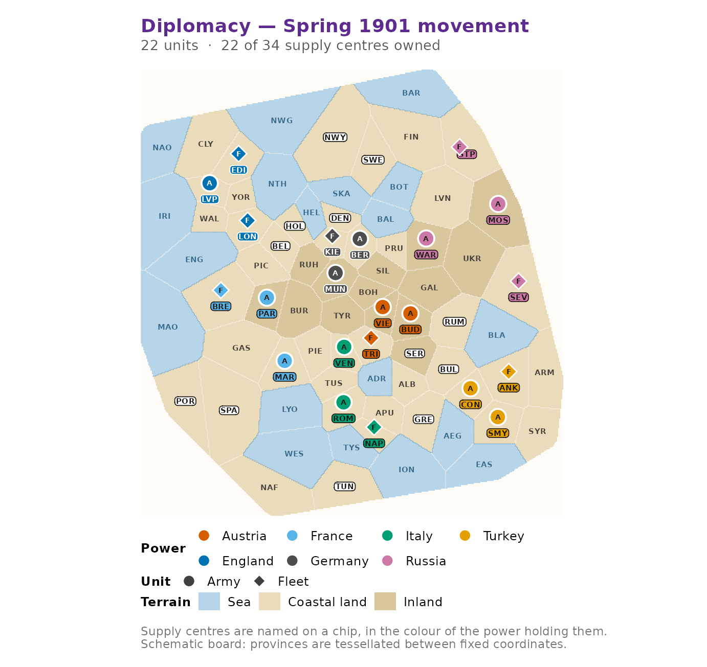

Diplomacy is a game of negotiation played on a map of Europe as it stood before the First World War. Seven Great Powers share 75 provinces, 34 of which are supply centres; a power that comes to control 18 of those centres wins outright. There are no dice. Every player writes orders for every one of their units in secret, all the orders are revealed at once, and a single set of rules decides what actually happened.
That last step is the hard part, and it is what this package is
mostly about. diplomacyR gives you the board, an
adjudicator that resolves a turn under the standard rules, a phase
machine that carries a game from Spring 1901 to its conclusion, a
handful of bots, and the tools to simulate and analyse many games at
once.
The board
dp_map() loads the standard seven-power board. It is a
validated object, not a bare list: the province table, the army and
fleet adjacency graphs, the supply centres, the home centres and the
canonical opening position all travel together.
board <- dp_map()
board
#> <dp_map> "standard"
#> • 75 provinces (14 inland, 42 coastal, 19 sea)
#> • 34 supply centres, 22 starting units
#> • 7 powers: "Austria", "England", "France", "Germany", "Italy", "Russia", and
#> "Turkey"Provinces are addressed by three-letter codes.
dp_provinces() lists them, optionally filtered by type.
head(dp_provinces(board, type = "sea"), 5)
#> # A tibble: 5 × 7
#> code name type supply_centre home_power x y
#> <chr> <chr> <chr> <lgl> <chr> <dbl> <dbl>
#> 1 adr Adriatic Sea sea FALSE NA 47 48
#> 2 aeg Aegean Sea sea FALSE NA 59 41
#> 3 bal Baltic Sea sea FALSE NA 48 74
#> 4 bar Barents Sea sea FALSE NA 55 97
#> 5 bla Black Sea sea FALSE NA 65 55Armies and fleets move on different graphs, so
dp_adjacent() needs to know which kind of unit is asking.
An army in Paris may walk into Burgundy; a fleet in Brest may not.
dp_adjacent(board, "par", "army")
#> [1] "bre" "bur" "gas" "pic"
dp_adjacent(board, "bre", "fleet")
#> [1] "eng" "gas" "mao" "pic"A new game
dp_new_game() sets up Spring 1901 with the canonical
22-unit opening position and each power owning its home centres.
game <- dp_new_game()
game
#> <dp_game> Spring 1901 (movement phase)
#> Russia 4 centres 4 units
#> Austria 3 centres 3 units
#> England 3 centres 3 units
#> France 3 centres 3 units
#> Germany 3 centres 3 units
#> Italy 3 centres 3 units
#> Turkey 3 centres 3 unitsThe units are a plain tibble, so anything you would normally do to a data frame works.
dp_units(game, "France")
#> # A tibble: 3 × 4
#> power type loc province
#> <chr> <chr> <chr> <chr>
#> 1 France fleet bre bre
#> 2 France army mar mar
#> 3 France army par pardp_power_counts() is the scoreboard: centres held, units
on the board, and the difference between them, which is what the winter
adjustment phase acts on.
dp_power_counts(game)
#> # A tibble: 7 × 4
#> power centres units delta
#> <chr> <int> <int> <int>
#> 1 Russia 4 4 0
#> 2 Austria 3 3 0
#> 3 England 3 3 0
#> 4 France 3 3 0
#> 5 Germany 3 3 0
#> 6 Italy 3 3 0
#> 7 Turkey 3 3 0Looking at the board
dp_plot_map() draws a schematic board as a
ggplot2 object: seas in blue, land in buff, every
supply centre named on a chip in the colour of the power that holds it,
and each unit as an A or an F in its owner’s
colour. autoplot() on a game does the same thing. The board
is close to square, so give it a close-to-square figure.
dp_plot_map(game)
The palette is colourblind-safe and available on its own as
dp_palette(), so charts you build yourself can use the same
colours.
Writing orders
Orders can be written the way players write them.
dp_parse_orders() reads standard notation and returns a
dp_orders tibble.
french <- dp_parse_orders(c(
"France: A Par - Bur",
"France: A Mar - Spa",
"France: F Bre - Mao"
))
french
#> <dp_orders> (3 orders)
#> France: A Par - Bur
#> France: A Mar - Spa
#> France: F Bre - MaoThe same orders can be built programmatically with
dp_order() and stacked with dp_bind_orders(),
which is what you want when orders are generated rather than typed.
dp_bind_orders(
dp_order("England", "move", "lon", target = "nth",
unit_type = "fleet"),
dp_order("England", "support", "edi", aux = c("lon", "nth"),
unit_type = "fleet", aux_type = "fleet")
)
#> <dp_orders> (2 orders)
#> England: F Lon - Nth
#> England: F Edi S F Lon - NthUnit types are optional. They are only there to make an order readable; the engine takes the real types from the board when it adjudicates.
If you are not sure what a unit may legally do, ask.
dp_legal_orders() enumerates every order the rules allow a
power to issue in the current phase, convoyed moves included.
legal <- dp_legal_orders(game, "France")
table(legal$type)
#>
#> hold move support
#> 3 12 15The full notation reference, including retreats, builds and the coast
qualifiers, lives in vignette("notation").
Adjudicating a turn
dp_adjudicate() resolves a movement phase. It takes the
game and the orders and returns a dp_result.
orders <- dp_example_orders("spring_1901")
result <- dp_adjudicate(game, orders)
result
#> <dp_result> Spring 1901 (movement phase)
#> • 20 of 22 orders succeeded
#> • 0 units dislodged
#> • 1 province left contestedTwo orders failed. summary() on a result returns the
effective orders with two extra columns: success, which
says whether the order achieved anything, and note, which
says how the engine treated the order in the first place.
resolved <- summary(result)
resolved[!resolved$success, c("power", "loc", "target", "success", "note")]
#> # A tibble: 2 × 5
#> power loc target success note
#> <chr> <chr> <chr> <lgl> <chr>
#> 1 Russia sev bla FALSE ordered
#> 2 Turkey ank bla FALSE orderedBoth Russia and Turkey ordered a fleet into the Black Sea, neither had support, and the two attacks cancelled. A province where a move bounced is recorded as contested, which matters because dislodged units may not retreat into it.
result$contested
#> [1] "bla"Units that were not ordered, or whose order broke the rules, hold. Nothing is ever rejected outright: an unparseable order is an error at parse time, but an order that is merely illegal on the board becomes a hold with a note.
Advancing the game
A result does not change the game; dp_advance() does. It
applies the outcome, steps the season and phase machine, recalculates
supply-centre ownership when the year turns, and checks for a solo
victory.
game <- dp_advance(game, result)
game
#> <dp_game> Fall 1901 (movement phase)
#> Russia 4 centres 4 units
#> Austria 3 centres 3 units
#> England 3 centres 3 units
#> France 3 centres 3 units
#> Germany 3 centres 3 units
#> Italy 3 centres 3 units
#> Turkey 3 centres 3 unitsNothing was dislodged in the spring, so the retreat phase is skipped and the game moves straight to the autumn.
A full year
The autumn works the same way. This time the moves are contested, and the autumn is the season in which supply centres change hands.
result <- dp_adjudicate(game, dp_example_orders("fall_1901"))
game <- dp_advance(game, result)
game
#> <dp_game> Winter 1901 (build phase)
#> France 6 centres 3 units
#> Russia 6 centres 4 units
#> Germany 5 centres 3 units
#> Austria 4 centres 3 units
#> England 4 centres 3 units
#> Italy 4 centres 3 units
#> Turkey 4 centres 3 unitsOwnership has been recalculated on the way into the winter, so
several powers now own more centres than they have units and are owed
builds. The winter adjustment phase is resolved by
dp_build().
builds <- dp_parse_orders(
c("France: Build A Par", "France: Build F Bre", "France: Build F Mar"),
phase = "build"
)
result <- dp_build(game, builds)
summary(result)[, c("power", "type", "unit_type", "loc", "success", "note")]
#> # A tibble: 3 × 6
#> power type unit_type loc success note
#> <chr> <chr> <chr> <chr> <lgl> <chr>
#> 1 France build army par TRUE built
#> 2 France build fleet bre TRUE built
#> 3 France build fleet mar TRUE builtFrance ordered three builds and got three. Every other power is owed builds too but ordered none, which is legal — an unused build is simply forfeited for the year.
game <- dp_advance(game, result)
game
#> <dp_game> Spring 1902 (movement phase)
#> France 6 centres 6 units
#> Russia 6 centres 4 units
#> Germany 5 centres 3 units
#> Austria 4 centres 3 units
#> England 4 centres 3 units
#> Italy 4 centres 3 units
#> Turkey 4 centres 3 unitsSpring 1902, and the game is ready for the next set of orders. The
third phase type, the retreat phase, is resolved by
dp_retreat(); it only appears in years where something was
actually dislodged.
Letting the engine play
Driving the three adjudicators by hand is useful when you care about
a particular position. When you do not, dp_step() resolves
whatever phase the game is in and hands back the next state, filling in
orders for any power you did not order with a bot.
mine <- dp_parse_orders(c("France: A Par - Pic", "France: F Bre - Mao"))
dp_step(game, orders = mine, bots = "greedy")
#> <dp_game> Fall 1902 (movement phase)
#> France 6 centres 6 units
#> Russia 6 centres 4 units
#> Germany 5 centres 3 units
#> Austria 4 centres 3 units
#> England 4 centres 3 units
#> Italy 4 centres 3 units
#> Turkey 4 centres 3 unitsBots stand in for whole powers, not for individual units. France ordered two of its six units here, so the other four held; the six other powers were played by the greedy bot.
dp_play() runs that loop until someone wins or the turn
cap is reached, and records every turn in a dp_history.
history <- dp_play(bots = "hold", max_years = 2, seed = 1)
history
#> <dp_history> (6 turns)
#> • From Spring 1901 to Winter 1902
#> • Outcome: "draw"The history coerces to a tibble with one row per power per turn, which is the natural input for a plot or a model.
Where to go next
-
vignette("notation")— every order form the parser accepts. -
vignette("adjudication")— how the engine resolves a turn, worked position by worked position. -
vignette("ai-and-simulation")— the bots, batch simulation and the analysis plots. -
vignette("design")— the S3 architecture and why the resolver works the way it does.
There is also a shiny application bundled with the package. It gives you the board, an order editor that checks legality as you type, a turn adjudicator, a replayable history and a simulation runner: